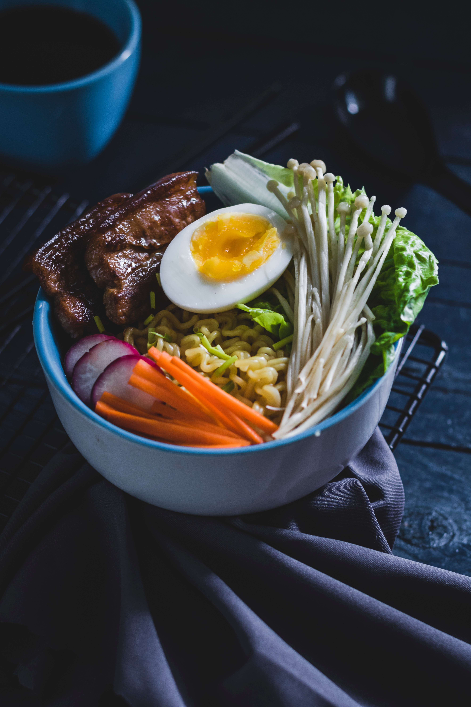
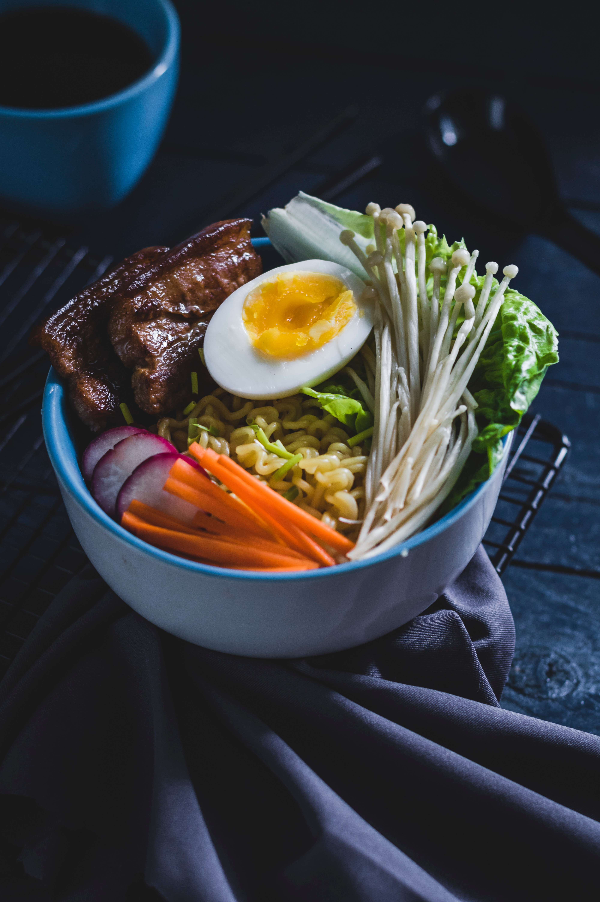

What is Food Photography?
Food photography is a genre of photography that captures food in an aesthetically pleasing way. It is often used by restaurants, food bloggers, and foodies to showcase their culinary creations.
Food photography is a genre of photography that captures food in an aesthetically pleasing way. It is often used by restaurants, food bloggers, and foodies to showcase their culinary creations.
Getting started in food photography can be fun and rewarding. Some tips to get you started include:
Here are some examples of stunning food photography:

 
